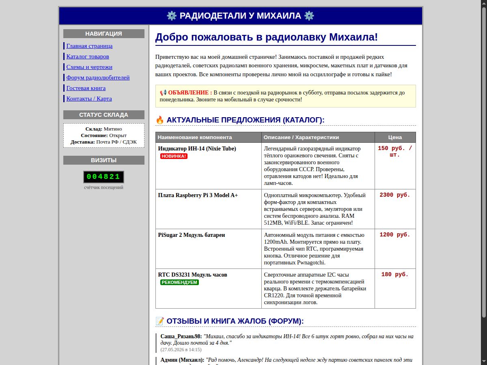
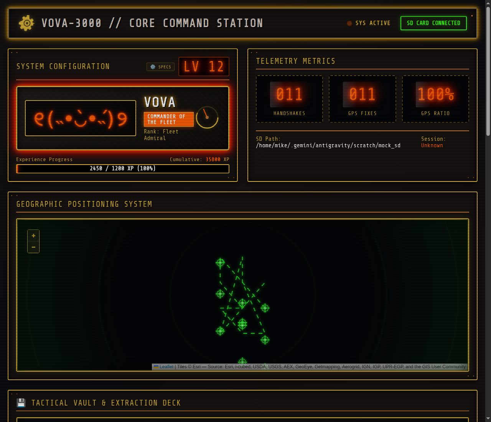
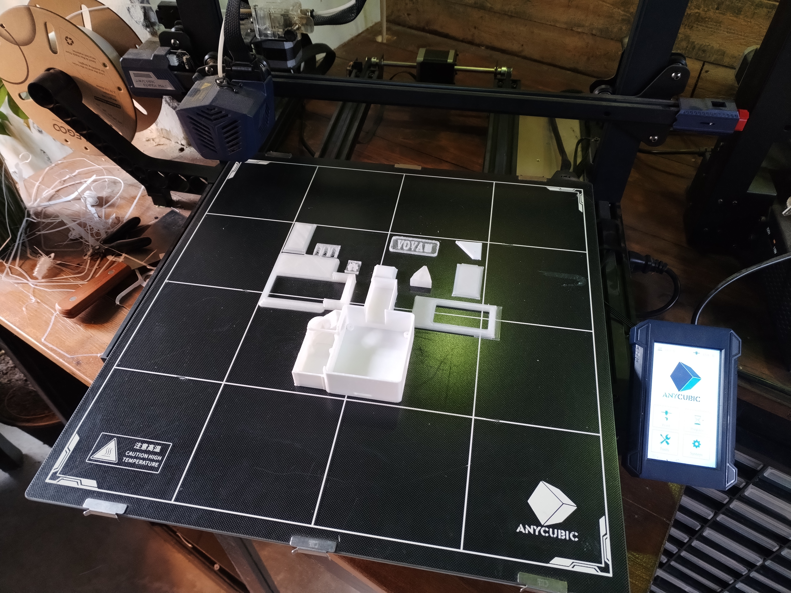
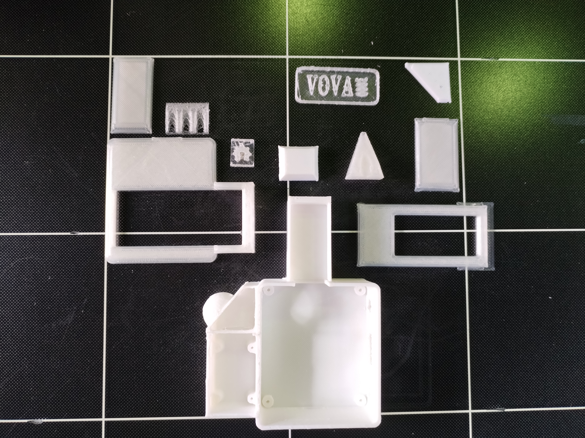
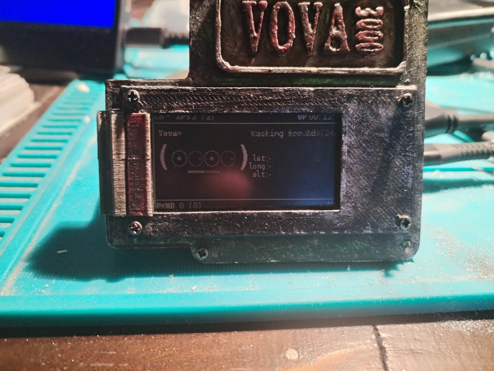
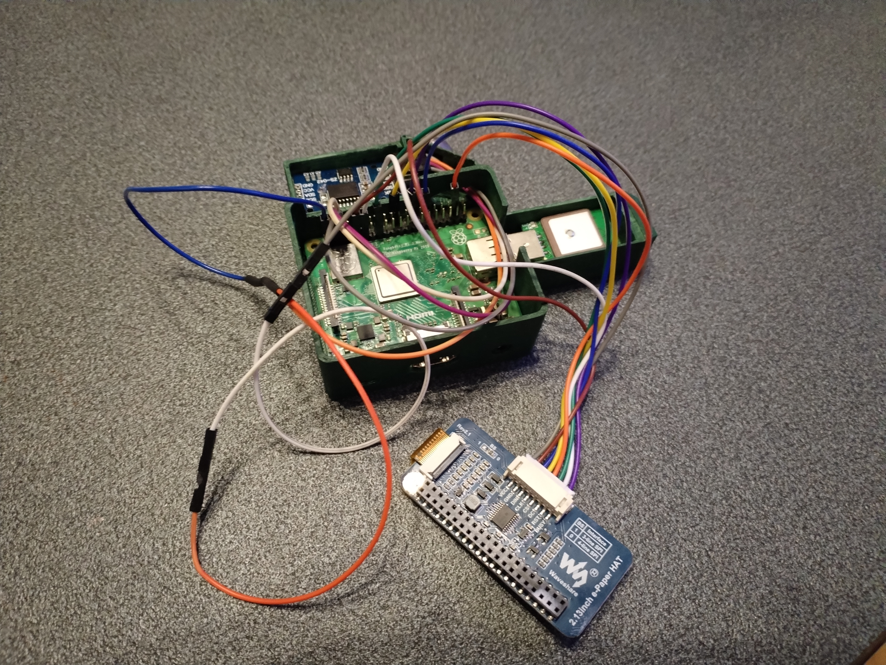
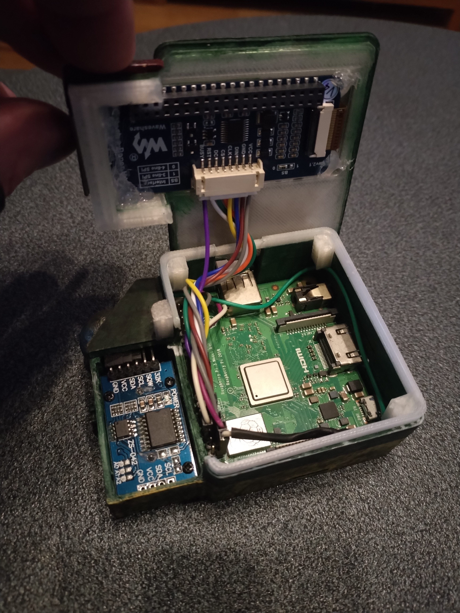
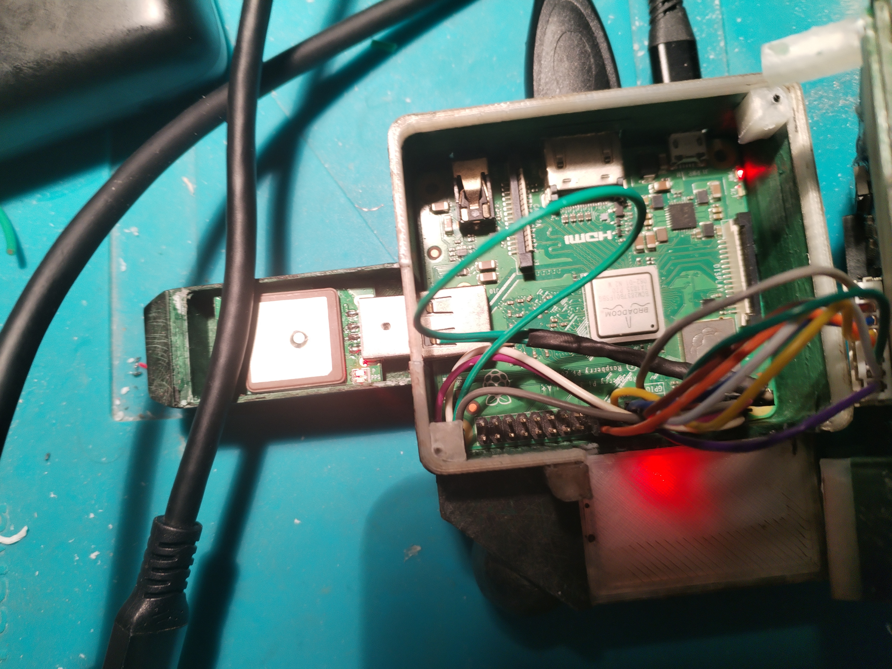
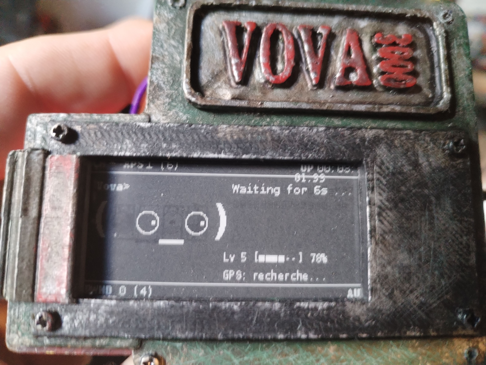
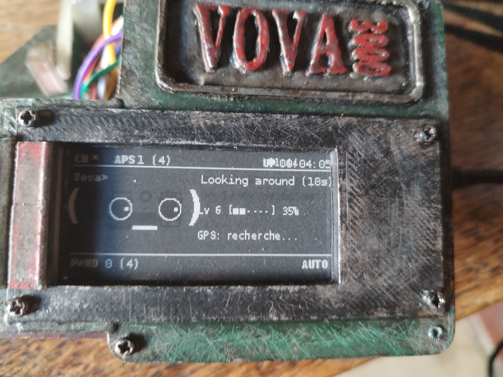

Project Concept & Comparison with the Original
The original Pwnagotchi project (created by Evilsocket) is an A2C-based AI companion for Wi-Fi auditing. It runs by default on a Raspberry Pi Zero W, uses a Waveshare 2.13" e-ink screen to express its emotions, and saves captured handshakes as PCAP files. However, analyzing handshakes on the Pi Zero is slow, and operating it in a mobile setup introduces major stability and time-synchronization challenges.
Project Vova is an advanced two-fold ecosystem upgrade:
- The Vova Companion Dashboard (
pwn_dashboard.py) : A standalone web-based dashboard designed to run on a Linux host PC. It includes a custom, low-level in-memory PCAP/PCAPNG parser written in pure Python that decodes IEEE 802.11 and EAPOL handshakes without bulky external dependencies like Scapy. It features an automated mount-crawling system that detects when the Pwnagotchi SD card is plugged into the PC, pulling in configuration, EXP statistics, and handshakes instantly, and gamifies the progress with 28 unique achievements and a detailed military rank hierarchy. - Optimized System Plugins : Tailored low-level system integrations written for the Pwnagotchi physical device to make it run reliably on a larger, more powerful Raspberry Pi 3 host.


3D Enclosure Design & Custom Weathered Print
To house the Raspberry Pi 3A+, the screen HAT, the DS3231 RTC, and the GPS module in a compact, portable package, a custom enclosure was designed from scratch in CAD. Designing for the Pi 3A+ presented spatial challenges compared to the Pi Zero. The thermal footprint is larger, requiring passive venting, and the physical components are bulkier.
A key architectural highlight of the enclosure is the protruding "snout" compartment. Placing the GPS antenna inside this isolated housing shields it from electromagnetic interference (EMI) generated by the quad-core processor on the Raspberry Pi motherboard, dramatically improving satellite lock times and reception stability.
The chassis was printed using white PLA filament on an Anycubic Kobra 3D printer. To match the cyberpunk aesthetic of the Pwnagotchi ecosystem, the raw prints were finished with a weathered industrial look. This involved post-processing steps: sanding, applying a dark green base coat, layering black paint washes, and dry-brushing silver acrylic paint onto the edges to simulate worn metallic weathering. Finally, the "VOVA 3000" badge lettering was detailed in red acrylic paint.



Hardware Adaptations: Taming the Raspberry Pi 3
Migrating Pwnagotchi to a Raspberry Pi 3 host introduces critical challenges regarding power draw, offline time tracking, and peripheral stability. The following custom solutions were built to address these bottlenecks:
> 1. Power Optimization: The Raspberry Pi 3A+ Advantage
A standard Raspberry Pi 3B or 3B+ draws substantial current (between 500mA and 1.2A+), causing rapid battery drain and frequent under-voltage warnings on portable power packs. To circumvent this, a Raspberry Pi 3A+ was selected. By omitting the power-hungry USB hub and Ethernet controller chip present on the Model B, the 3A+ cuts power consumption in half (averaging 200–350mA) while still offering the quad-core processing power of the Pi 3 series.



> 3. GPS Stability: Direct NMEA Serial Parsing vs gpsd
The standard Pwnagotchi GPS plugins depend on the Linux gpsd system daemon. However, gpsd is bloated and notoriously unstable on custom embedded configurations, often losing communication with USB GPS dongles (such as the u-blox 7).
The solution was a custom plugin, gps_display.py, built to bypass gpsd entirely. Using pySerial, it reads raw sentences directly from /dev/ttyACM0 and parses NMEA sentences ($GPRMC, $GPGGA, $GPGSA, $GPGSV) in Python. It tracks satellite fixes, counts satellites in use, and calculates a rolling average of the last 20 Signal-to-Noise Ratio (SNR) values in dB to measure raw reception quality.
Furthermore, the plugin executes an automated troubleshooting diagnostic routine at startup (checking active /dev/ nodes, running lsusb, scanning kernel events in dmesg, and taking a 3-second serial sample) and outputs the results to /boot/gps_diagnostic.txt.
> 4. E-Ink Display Coordinate Alignment
Integrating the telemetry feed on the Waveshare 2.13" e-ink display requires precise coordinate placement to prevent overlap with standard Pwnagotchi graphics. The GPS status element coordinates were shifted and anchored at 130, 74, aligning it with the built-in level-up interface divider line to ensure a clean, readable layout without overlapping the face or core status text.


Software Architecture and Core Features
> 1. Low-Level In-Memory PCAP/PCAPNG Parser
Instead of relying on heavy security libraries like Scapy, Vova implements a custom binary parser in pure Python to read the raw file bytes of .pcap and .pcapng structures:
- PCAP Global Headers : magic numbers, endianness, IEEE 802.11 link layer resolution.
- PCAPNG Block Structures : Section Header Blocks, Enhanced Packet Blocks.
- 802.11 Frame Controls : BSSIDs, Client MACs, Beacon SSIDs, and EAPOL packet isolation.
- Hexadecimal dump for interactive debugging.
> 2. Auto-Detection of Pwnagotchi Storage
The dashboard server crawls system media mount paths (like /media/mike/rootfs) automatically to locate active Pwnagotchi SD cards and parse config.toml, exp_stats.json, and handshakes.
> 3. Gamification Engine & Ranks
To make security testing more engaging, the dashboard translates raw XP stats into a detailed military hierarchy and tracks 28 unique achievements (Private to Fleet Admiral).
> 4. Decoy Storefront & Temporal Decryption Key
To prevent unauthorized access during physical security audits, the root path (/) serves a decoy storefront styled as a 1990s Russian radio electronics shop ("РадиоДетали у Михаила"). Typing the passphrase "vova" triggers an interactive MS-DOS terminal overlay and unlocks the modern tactical dashboard.
API Endpoint Reference
GET /api/data — Returns general system statistics, ranks, and logs.
GET /api/pcap_detail?file=X — Decodes and displays handshakes details & hex dump.
GET /api/backup/handshakes — Generates and downloads a .zip archive of all PCAPs.
GET /api/backup/config — Downloads the device config.toml file.